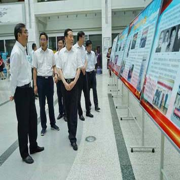

搜索
加入收藏
|
设为首页
首页
部门介绍
工作职责
机构及人员
领导小组
党派团体
民革河南大学支部
民盟河南大学委员会
民进河南大学总支委员会
民建河南大学总支委员会
农工党河南大学委员会
九三学社河南大学委员会
河南大学台联
河南大学侨联
河南大学支联会
河南大学留联会
人大政协
人大政协
建言献策
建言献策
政策法规
理论经纬
学习资料
会议纪要
工作纪事
民族宗教
民族工作
宗教工作
下载专区
资料下载
联系我们
留言板
微博
联系方式
张先飞作客同心大讲堂 谈“五四：青年中国的诞...

1
2
- 理论学习 -
more
>>
《河南日报》张先飞:青年中国的诞生
05月06日
100句名言回顾党史100年
04月23日
孙守刚：从百年党史中领悟统战法宝作用
04月09日
汪洋：推动新时代统战工作高质量发展
04月09日
习近平：在党史学习教育动员大会上的讲话
04月06日
共商国是！中央政治局常委同志的“统战声音”
03月09日
孙守刚：学好用好《中国共产党统一战线工作条例》 解决河南统战工作难点、痛点
02月12日
- 通知公告 -
more
>>
河南省第一届党外知识分子学习贯彻习近平总书记关于加强和改进统一战线工作的重要思想研讨会征稿通知
05月13日
关于学习宣传贯彻《中国共产党统一战线工作条例》的通知
04月09日
关于申报中国高等教育学会“高校统战工作研究”专项课题的通知
05月08日
“同心大讲堂”第十四期——五四：青年中国的诞生
05月08日
关于表彰2020年度基层统战工作先进单位的决定
04月01日
同心大讲堂：从百年党史看中国共产党的统战经验（何云峰）
03月19日
- 新闻速递 -
more
>>
张先飞作客同心大讲堂 谈“五四：青年中国的诞生
05月06日
何云峰教授应邀赴西亚斯致远住宿书院举办“学习有道”之“汇致远”讲座
04月23日
何云峰教授赴郑州升达经贸管理学院马克思主义学院做《中国共产党百年党建的历程》专题报告
04月09日
党委学工部到临床医学院调研指导工作
04月09日
民进开封市委举行河南大学哲管院硕士生课题研讨会
04月06日
李文山深入基层单位宣讲《条例》、讲党课
03月09日
- 统战忆往-
more
>>
杜祖亮：鞠躬尽瘁朱自强
05月06日
贾玉英：我与河南大学统战
04月23日
张治军：怀念我的恩师李丙寅先生
04月09日
阎现章：不负历史使命，在编辑出版领域为河南大学历史系争光添彩
04月09日
赵国权：平凡而又诗意的大学生活
04月06日
张生汉：我向安澜先生求字
03月09日
`
- 人物风采 -
more
>>
丁中一 绘画初心的纯净
05月06日
王立群：一座小城，一位学者
04月23日
贾玉英：深情扎根河大的宋史专家
04月09日
王蕴智：越是“冷门”学科，越要甘
04月09日
《中华读书报》王立群谈枕边书
04月06日
《河南日报》深情书写学生引路人的最美模样——走近河南大学生命科学学院教授、九三学社社员谷艳芳
03月09日
"河大统战公众号"
- 相关链接 -
"河大统战公众号"
Copyright © 2019 河南大学党委统战部 技术支持
河南大学
107网站工作室
管理后台
地址：中国 河南 开封.明伦街/金明大道 邮编：475001/475004 电话：0371-265666428
X